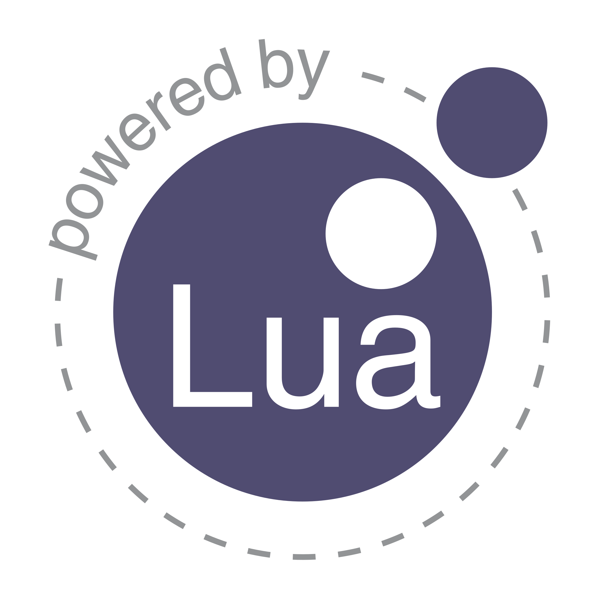

Lua
Le langage Lua est un langage de programmation léger et puissant, conçu pour être intégré dans des applications afin d'ajouter des fonctionnalités scriptées. Il est souvent utilisé dans le développement de jeux vidéo, comme dans les mods pour des jeux populaires, et dans des systèmes embarqués en raison de sa simplicité et de sa faible consommation de ressources. Lua se distingue par sa syntaxe claire, sa flexibilité et sa capacité à interagir facilement avec d'autres langages et systèmes. Sa facilité d'intégration et sa performance en font un choix populaire pour la création de scripts.

Le langage Lua est utilisé par de nombreuses entreprises et dans
divers logiciels, dont l'automatisation et les systèmes embarqués.
Voici quelques exemples notables :
Adobe Lightroom : Lua est utilisé pour des scripts
d'automatisation dans la gestion de photos et les traitements par
lots.
Wireshark : Lua est utilisé pour l'écriture de scripts
d'analyse réseau dans ce logiciel de capture de paquets.
Lua
est particulièrement populaire pour sa légèreté, sa flexibilité et
son intégration facile avec d'autres systèmes, ce qui le rend idéal
pour des applications qui nécessitent une programmation dynamique ou
de modding.